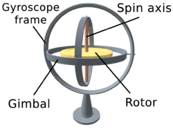
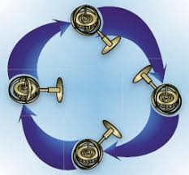
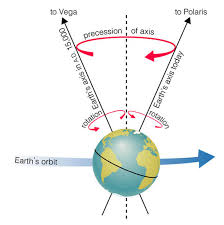
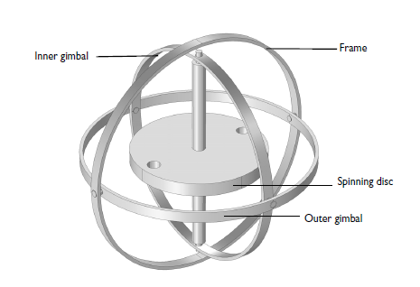

Background of gyroscope
In the early days, people discovered the spinning top, a toy with a remarkable ability to sit upright while rotating rapidly. For games and entertainment, ancient Greek, Chinese and Roman societies built tops. The Maori in New Zealand used humming tops in mourning ceremonies, with specially-crafted holes.
Some villages had a large top built in 14th century England for a warming-up exercise in cold weather. Tops were used in place of dice, like the dice in the modern fantasy game Dungeons & Dragons. Scientists and sailors started trying to use spinning tops as a science instrument only in the late 18th and early 19th centuries. At that moment, for navigation, sailors depended on sextants, calculating the angle between particular stars and the horizon. However this approach was limited if choppy seas or fog blurred the true horizon, or the stars were obscured by clouds.
In the 1740's, Serson, an English physicist, observed that even though the surface on which it stood was tilting, the spinning top appeared to stay straight. He said sailors could use it on ships as an artificial horizon. Unfortunately, the ship sank and all was lost when Serson went to sea to test this concept.
In the 19th century, Fleuriais, a French physicist, developed a top that was continually operated by air jets blowing into mini-buckets on the wheel surface, a method that has since been used for thousands of gyros. In the early 1800s, Johann Gottlieb Friedrich von Bohnenberger, a professor at the University of Tuebingen, Germany, constructed the first modern gyroscope. Instead of a wheel, it was created with a heavy ball, but because it had no scientific application, it faded into history.
In the mid-19th century, but not by its use as a navigation tool, the spinning top acquired the tag, "gyroscope," In an attempt to observe the Earth's rotation, the French scientist Leon Foucault experimented with a long heavy pendulum. The pendulum was set on the north-south plane, spinning back and forth while the Earth rotated under it.
The first gyroscope, called the whirling speculum, was invented by John Serson in 1743. He used the apparatus as a level to define the horizon in bad weather. Throughout the 19th century, several other developments in this paradigm continued to evolve independently.
One of these advances helped calculate the rotation of the Earth. In this scientific pursuit, Leon Foucault successfully used the gyroscope in 1852, and he was able to calculate the rotation of the Earth for a complete 8-10 minutes before it yielded to the forces of friction. Foucault is also known for giving the instrument the title of a gyroscope based on the origins of the Greek language.
The invention of electric motors permitted the gyroscope gimbal pairs to spin indefinitely, resulting in a number of significant developments for the instruments. This included the addition in 1904 of a gyrocompass, which was soon used for navigational purposes by militaries around the world.
The gyroscope was a major component of aircraft during World War II, as it aided in navigating gun sights and targets. Developments to minimize the size of gyroscopes for use on missiles were invented after the war. They were less than 3 ounces in weight, but could rotate more than 24,000 times a minute!
Today, three axis gyroscopes are used in various portable electronic devices, including mobile phones, watches, and tables. The addition of this technology enables users of most touchscreen devices to experience motion sensing and screen movement along multiple axes.
Although gyroscopes were originally developed for academic positioning and motion calculations, today's use of gyroscopes is more for the entertainment and enjoyment of modern technology. New and interesting applications for the gyroscope will continue to be found and used to advance the devices of the future as this technology continues to evolve.
Gyroscopic Principles
Gyroscopes are used to monitor three of the most common flight instruments, the attitude indicator, the heading indicator and the turn-and-bank indicator's turning needle. These instruments involve a wheel or rotor that rotates at a high RPM, giving it two essential characteristics: rigidity and precession. The rotor or gyro can be powered by a special pump on the motor electrically or by vacuum / pressure.
 Gyroscope instrumentRigidity in Space
A rotating gyro rotor's primary characteristic is rigidity in space, otherwise referred to as gyroscopic inertia. "a body in motion tends to move in a constant speed and direction unless acted upon by an external force" As long as no external forces act to modify its motion, the rotating rotor within a gyroscopic instrument retains a constant attitude in space. Such stability would increase in proportion to any increase in the rotor's mass or rpm. As a result, rotors are made of heavy materials in gyroscopic aircraft instruments and are designed to spin at speeds of 10,000 to 15,000 revolutions per minute (RPM).
 Gryoscopic inertiaAs an unchanging reference in space, attitude and heading indicators use gyros; that is, once the rotor is rotating, it maintains a constant position with respect to the horizon or direction. Even if the surrounding circular frames or gimbals are shifted, the rotor of a universally equipped gyro remains in the same position. This helps the aircraft to rotate around the gyro for all purposes without adjusting the rotor's location. In order to allow the instrument to show the actual attitude or direction, the attitude or heading of the aircraft can thus be compared to the rotor.
Precession
As a consequence of external forces, precession is the tilting or turning of the rotor axis. The rotor will rotate in the direction of the force if a deflective force is applied to a stationary gyro rotor. However the force causes the rotor to rotate as though the force had been applied to a point 90 degrees around the rim in the direction of rotation when the same force is applied to the rim of a rotating rotor. This turning movement or precession places the rotor in a new plane of rotation which is parallel to the force.
 PrecessionAs a consequence of external forces, precession is the tilting or turning of the rotor axis. The rotor will rotate in the direction of the force if a deflective force is applied to a stationary gyro rotor. However the force causes the rotor to rotate as though the force had been applied to a point 90 degrees around the rim in the direction of rotation when the same force is applied to the rim of a rotating rotor. This turning movement or precession places the rotor in a new plane of rotation which is parallel to the force.
Construction of gyroscope
The gyroscope is made up of a central wheel or rotor mounted in a ring frame. The rings are properly called gimbals, or gimbal rings. Gimbals are devices that assist a wheel or other structure but allow it to move freely. The rings themselves are supported at one end on a spindle or axis that can be placed on a base or within an instrument in turn. Gyroscopic inertia is the property of the rotor axle to point toward its original space orientation; inertia is simply the property of a moving object to keep moving before it is stopped. In the end, friction against the air slows the wheel of the gyroscope, so the momentum erodes away. The axle then starts wobbling. A gyroscope must rotate at a high speed to retain its inertia and its mass must be concentrated towards the rim of the wheel.
Gimbal Rings
The gyroscope rotor is held in place by rings or better known as gimbal rings. These allow for freedom of motion in three dimensional planes as required by the instruments of the aircraft. Not all instruments will need all the planes of movement at the same time, this depends on their function.
 Gimbal rings on a gyroscope
Plane of motion
There are three possible motions for a gyroscope:
- The plane of rotation of the gyro.
- The plane of applied force.
- The plane of precession.
Gyroscopes Setup
Depending on how you set-up or mount the gyro in the gimbal rings, it will have a different number of planes the gyro can move in. Each set-up is useful to the pilot for various flight instruments. These are the list of possible installations and their uses:
- Rate Gyro can move in one plane, the movement in the plane of force is used to measure the precession. This set-up is commonly used in Turn Coordinator.
- Tied Gyro can move in all three planes but it will be kept in one plane by an external force, usually air jets in case of Directional Indicator.
- Earth Gyro is the only gyro with freedom of movements in all three planes. However, it will still be held in one plane due to Earth’s Gravity. This gyro is commonly used in Attitude Indicator.
- Space Gyro can move in all three planes and is stabilized to a fixed point in space. This set-up is interesting as it will move by itself due to earth’s rotation while in fact it's not moving at all, space wise.
Click this for the next section: Flight Instrumentation and Avionics systems onboard commercial aircraft